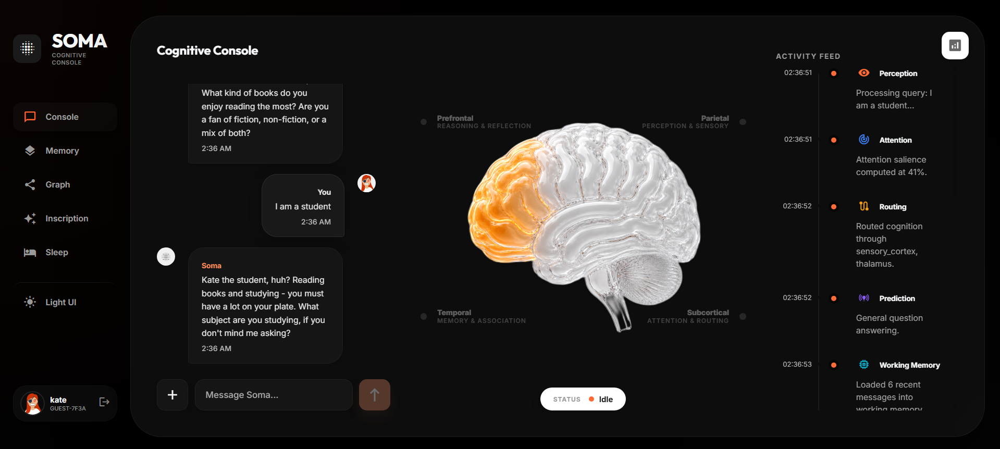
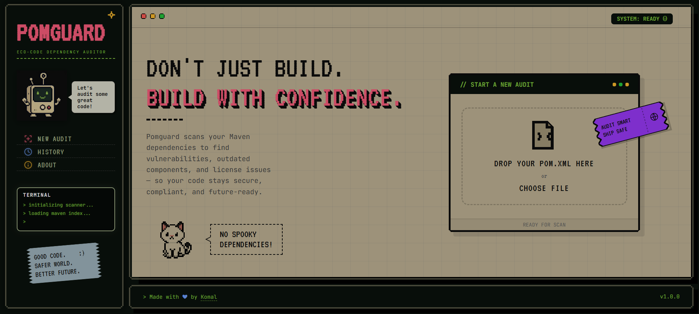
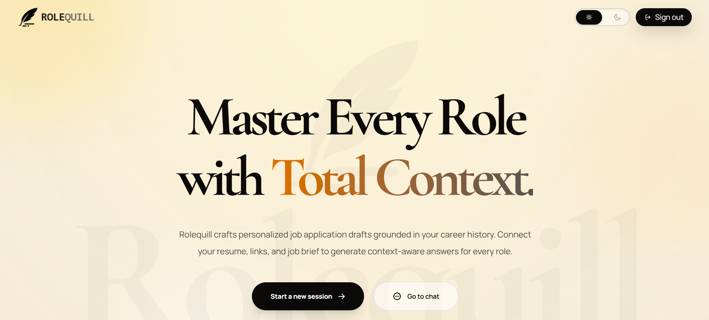

Komalpreet Kaur
AI/ML Engineer building multimodal systems for speaker extraction, deepfake forensics, and cognitive reasoning architectures.
AI/ML Engineer building multimodal systems for speaker extraction, deepfake forensics, and cognitive reasoning architectures.
Hi, I’m Komal 👋
I’m an AI/ML Engineer focused on building multimodal systems across speech, computer vision, reasoning, and cognitive AI architectures. My work involves designing intelligent applications that combine machine learning with scalable backend systems and real-world interaction.
I’ve built projects ranging from speaker extraction systems and deepfake forensic pipelines to graph-based memory architectures and AI verification tooling. I enjoy working on systems that process information through voice, images, memory, and structured reasoning rather than isolated AI models.
Beyond model development, I’m interested in the engineering side of AI — inference pipelines, RAG systems, deployment infrastructure, browser-integrated tools, and full-stack AI applications. I enjoy turning complex AI ideas into interactive, usable systems that can operate reliably in real-world environments.
Most noise-cancellation systems remove background noise but fail when multiple people speak simultaneously. Vanta approaches the problem differently — instead of suppressing noise blindly, it identifies who to preserve.
Given a short reference clip of a target speaker and a noisy recording, Vanta isolates only that person’s voice while filtering out interfering speakers and environmental noise.
A frozen ECAPA-TDNN speaker encoder generates a voice embedding from a 5-second reference clip.
That embedding conditions a Conv-TasNet-inspired temporal convolution network, allowing the model to separate the target speaker directly in the time domain rather than relying on spectrogram masking.
Training data was synthesized dynamically using:
The model was optimized using SI-SDR loss for waveform-level separation quality and trained on fully synthetic multi-speaker mixtures.
Vanta was designed as a deployable AI system rather than a standalone research model.
A cognitive AI architecture modeled after human brain functions. It uses a multi-layered memory system to store facts, map complex relationships, and maintain a persistent stream of episodic experiences.
Features an automated "Sleep Cycle" that simulates cognitive consolidation to refine its intelligence over time.

Built a multi-method deepfake detection system combining CNNs, frequency analysis, noise estimation, and metadata forensics.
Provides explainable outputs using visual heatmaps and scoring to justify predictions.

Developed an AI-powered Chrome extension that segments clothing items from images using transformer-based vision models.
Integrates visual search to help users discover similar fashion products directly from images.

A high-performance Maven dependency auditor designed to identify outdated libraries and security vulnerabilities in real-time.
Leverages parallel processing and direct integration with Maven Central to provide developers with instant, color-coded health reports and session-based audit tracking.

A GitHub-grounded career drafting workspace that turns your resume, synced repositories, and target job descriptions into evidence-backed application answers.
It eliminates AI hallucinations by treating your actual work history and README files as the primary source of truth, ensuring every claim in your application is defensible.

Created an interactive ML dashboard to analyze socioeconomic data and predict income levels using classification models.
Includes EDA, clustering, and real-time prediction with performance evaluation metrics.

Built a data analytics dashboard to explore crime trends using star schema modeling and advanced DAX calculations.
Delivers insights through geospatial analysis, trend tracking, and interactive visualizations.

C++, Python, JavaScript, TypeScript, Java
PyTorch, Scikit-learn
Groq, LangChain, Hugging Face, OpenAI APIs
Vector/Graph RAG, FAISS, ChromaDB
OpenCV, Vision Transformers, CNNs
FastAPI, REST APIs
Spring Boot, Next.js, Tailwind CSS, Git, Docker, Linux
Pandas, NumPy
AWS, Hugging Face Spaces
ChromaDB, Neo4j, MySQL, SQLite, PostgreSQL, MongoDB